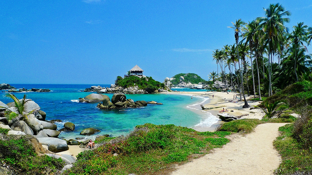
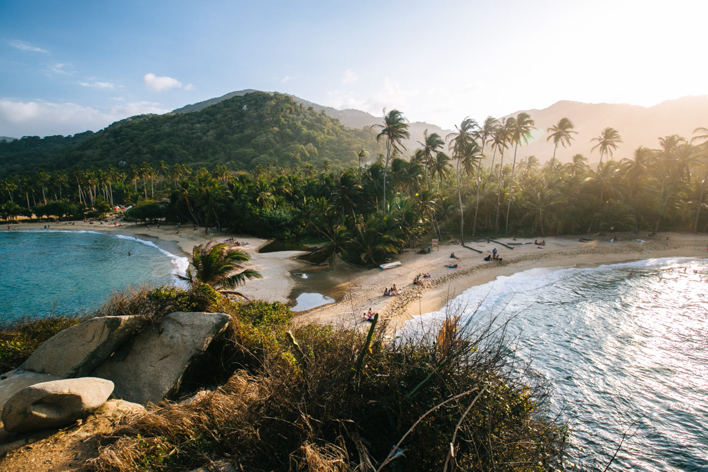

Cabo San Juan
Cape San Juan in English is a beautiful beach area that is located inside of Parque Tayrona, Colombia about 30 minutes outside of Santa Marta. El Cabo San Juan in Parque Tayrona is easily accessible from many parts of Colombia including Bogota and Medellin. Avianca has multiple flights every day to Santa Marta and you can find good bargains at various times of the year.
Tayrona National Park
The popular Tayrona Park lies at the Caribbean coast near Santa Marta in Colombia. It has some of South America's loveliest coastline. This little, delightful spot is located about 30 minutes from the city of Rodadero, with beautiful beaches, hammocks to rent for the night, food, water and surf (be careful, though; there is a strong riptide - experienced surfers only!). Additionally, you can get a guide to take you to a native village in the nearby mountains.
The River Village of Minca

Minca is quite simply a special place! Flanked by coffee farms, forest, mountains, rivers, streams, waterfalls and swimming holes, as well as great restaurants and cafes, Minca is the perfect place to kick back and relax for a few days. Take in some great scenic walks, spot tropical birds galore and enjoy interacting with the ever-friendly locals. The local people of Minca really make it just that extra bit special with their attitude, openness and friendliness towards all visitors. Set in the Sierra Nevada mountain range at 650 meters above sea level, Minca offers a nice year- round climate, a refreshing change from the heat of the coast, although you’ll still be able to see the sea!